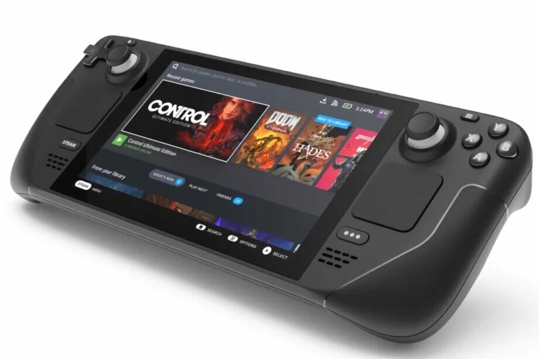

| Головна | Шкільні предмети | Мови програмування | Вихід до комп'ютера | Хобі | Знання з ШІ | Плани на майбутнє | Інші сайти | Блог |
Часто задаваемые вопросы Valve Steam Deck проливают свет на новую горячую портативную консольСегодня компания Valve опубликовала часто задаваемые вопросы (FAQ), которые проливают свет на многие аспекты Steam Deck, новой неуловимой портативной игровой консоли. Steam Deck - одна из первых массовых портативных консолей на базе архитектуры ПК (если не считать различные смартфоны на базе чипов Intel Atom) или планшетов на базе x86. Оказывается, Valve провела некоторую сегментацию между вариантами накопителей. Все три варианта емкости оснащены сенсорными экранами IPS LCD с оптически склеенным стеклом и 10-точечным мультитачем, но вариант на 512 ГБ имеет дополнительную антибликовую обработку. Steam Deck сочетает в себе пользовательскую операционную систему на базе Linux, а также пользовательский интерфейс Steam и платформу DRM, хотя есть возможность играть в игры, не относящиеся к Steam, с помощью программного обеспечения слоя перевода Proton. Вы можете добавлять игры в свою библиотеку так же, как и в настольном Steam. Само программное обеспечение Steam имеет пользовательский интерфейс, оптимизированный для консоли, который заменяет режим Big Picture обычного настольного Steam. Как и в обычном Steam, на консоли Steam Deck можно запускать и играть в игры без подключения к Интернету, если только игра этого не требует. MicroSD - основной съемный носитель для этой консоли, а Steam Deck форматирует карты в файловую систему ext4, наряду с casefolding. Он может считывать данные с карт с exFAT. Консоль поддерживает загрузку с microSD. Также поддерживается двойная загрузка, как и на ПК. Конечные пользователи также получат доступ к программе настройки UEFI консоли. Вы можете использовать Steam Deck как игровой контроллер для ПК, через Remote Play. Контроллеры консоли оснащены двумя тактильными моторами LRA, по одному под каждым трекпадом. Консоль не поддерживает внешние графические процессоры. В Steam Deck можно использовать гарнитуры VR для ПК, но Valve утверждает, что консоль не оптимизирована для VR. Компания также сообщила, что производительность консоли одинакова в режимах питания от батареи и от розетки, и что подключение к сети никак не улучшает производительность. Длина зарядного кабеля составляет 1,5 м (4'9"). Если вы уже зарезервировали свой Steam Deck, вы не сможете изменить его вариант. Вам придется отменить бронирование и забронировать его снова (что отодвинет вас в конец очереди). Источник ориганальной статти |